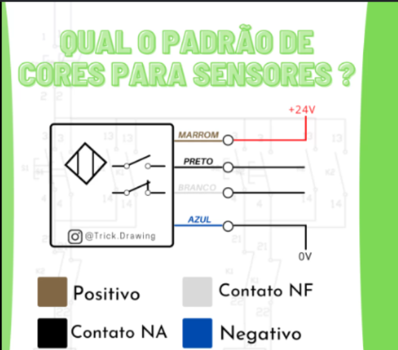

Motores Elétricos, Sensores e Medição
Esta seção compreende as máquinas de conversão de energia física, sensores de fim de curso industriais e ferramentas vitais de diagnóstico elétrico.
Motor Elétrico de Indução Trifásico
Conceito: É uma máquina rotativa assíncrona que converte energia elétrica trifásica em energia mecânica através do princípio da indução eletromagnética.
Aplicação: O grande motor do setor fabril. Aciona esteiras transportadoras, bombas d'água industriais, compressores de ar e exaustores.


Padrão de Cores para Sensores Industriais
Conceito: É o padrão internacional para a fiação de sensores industriais (indutivos, capacitivos, ópticos, etc). O condutor Marrom conecta no Positivo (+24V), o Azul no Negativo (0V), o Preto é o sinal do Contato NA (Normalmente Aberto) e o Branco é o Contato NF (Normalmente Fechado). Todos estão mostrados na imagem abaixo.
Aplicação: Padronização da ligação elétrica de sensores às entradas digitais do CLP e painéis de comando, facilitando diagnósticos de manutenção e evitando curtos-circuitos.

Sensor Fim de Curso (Limit Switch)
Conceito: É um dispositivo eletromecânico que atua como uma botoeira automática através do impacto físico de uma parte móvel de uma máquina.
Aplicação: Limitação de curso de pontes rolantes, parada automática de portões eletrônicos residenciais e sensores de segurança em portas de máquinas.


Multímetro
Conceito: É um instrumento portátil de teste e diagnóstico que unifica a medição de várias grandezas elétricas como Tensão, Corrente e Resistência.
Aplicação: Manutenção preventiva e corretiva, testes de bancada, localização de queimas de componentes e verificação de tensões.